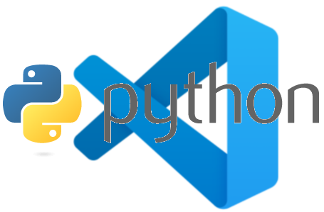
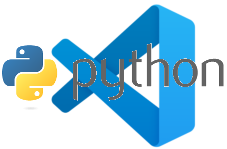
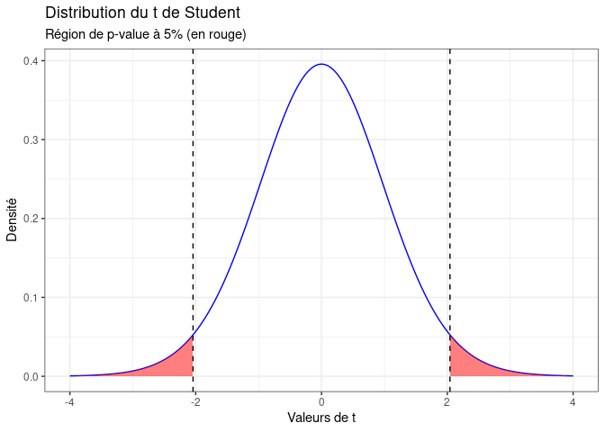
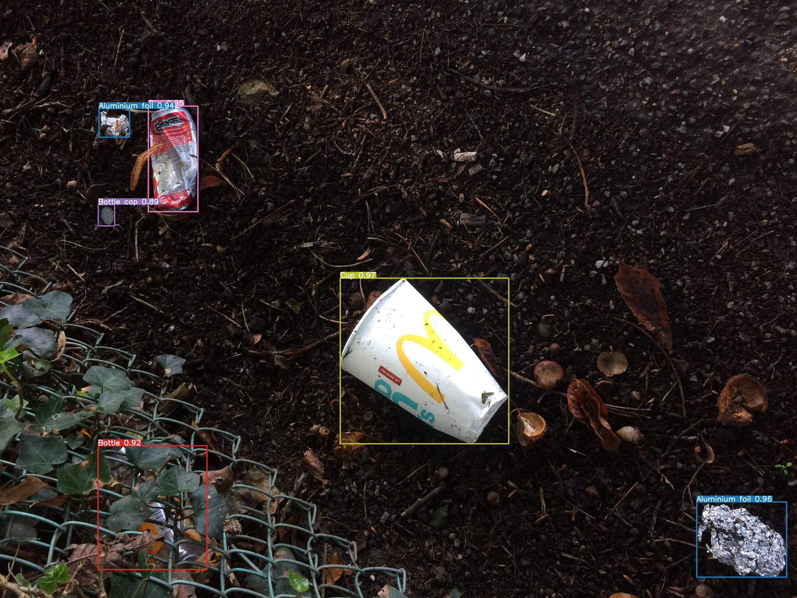
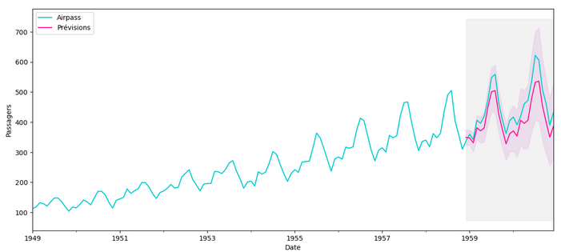
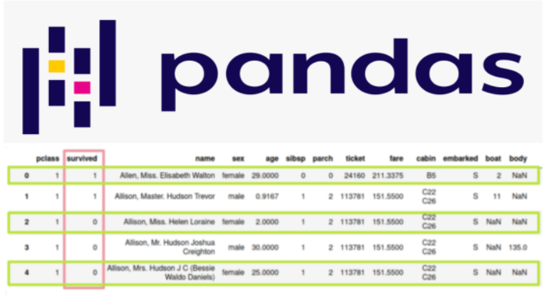
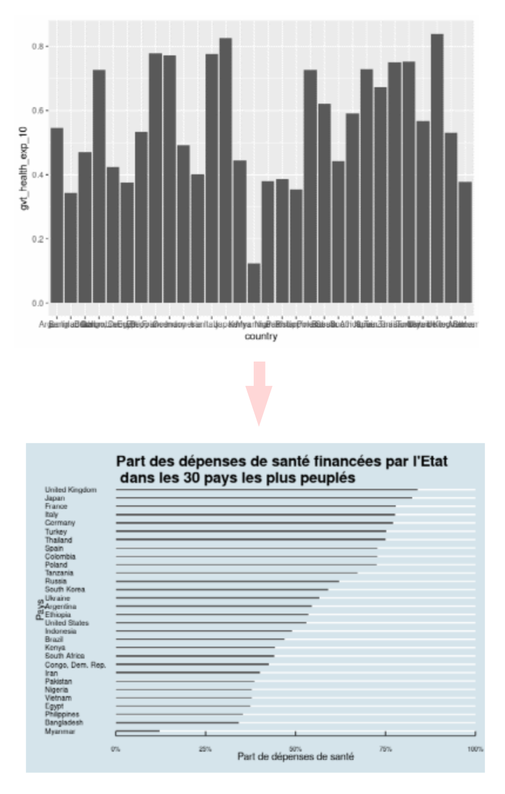

Python pour la Data Science : configurer son environnement de travail
Les essentiels et rien que les essentiels pour se lancer en Data Science avec Python. 
Les essentiels et rien que les essentiels pour se lancer en Data Science avec Python. 
Petite présentation intuitive des p-values et de leur utilisation dans nos modèles statistiques. 
Création d'un modèle de détection d'images permettant de classifier des fruits et leur état de maturité.

Quelques trucs pour coder facilement ses propres fonctions en utilisant la syntaxe du tidyverse.

Présentation de la méthode de standardisation directe sur les taux de survie des passagers du Titanic.
Entraînement de Yolo V7 sur des données personnelles et sans GPU hardware 
Analyse d'une série temporelle par décomposition et modélisations classiques. 
Quelques conseils pour réussir sa transition de SAS vers R
Tour d'horizon des manières de filtrer des observations et sélectionner des colonnes avec pandas 
Réalisation et mise en forme d'un graphique en colonnes avec ggplot2. 